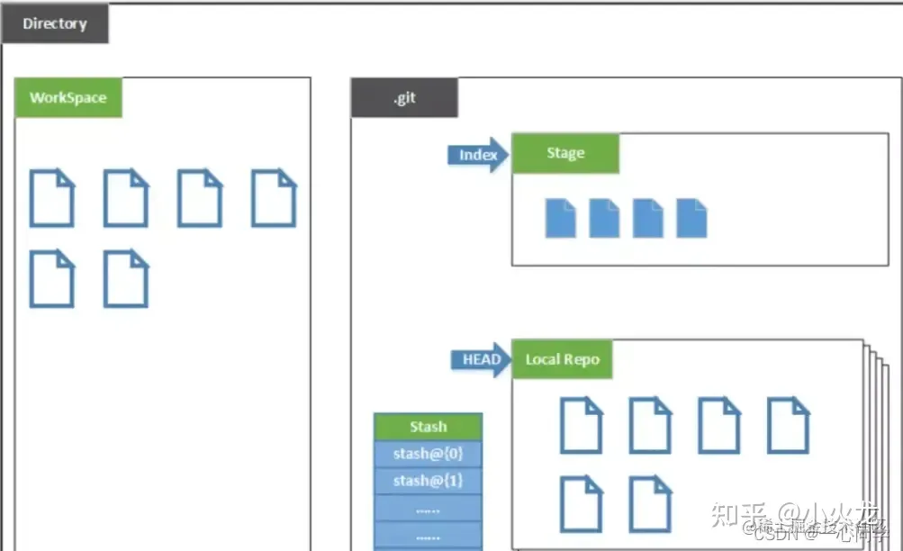
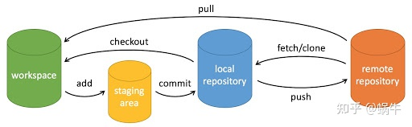
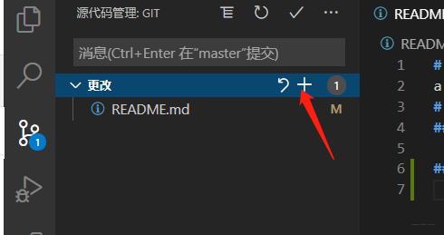
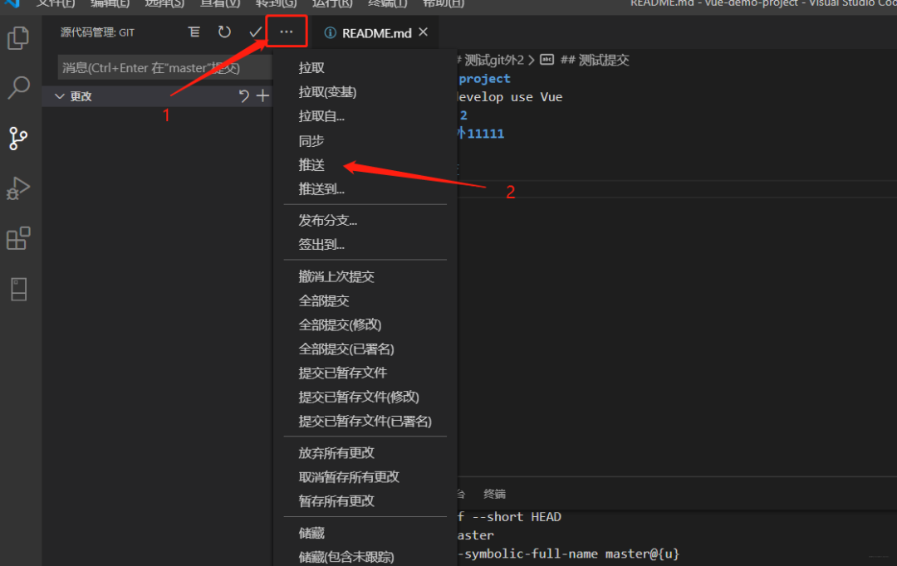
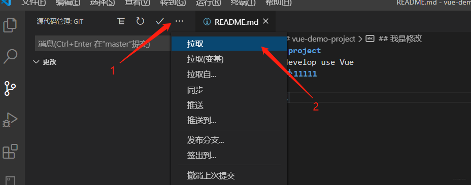

git初探
git是什么？
Git是目前世界上最先进的分布式版本控制系统
什么是版本控制系统？
就是一个帮我们记录每次文件的改动并且还可以让他人协作编辑的系统/软件
集中式与分布式
集中式
版本库是集中存放在中央服务器
工作时要与中央服务器建立连接（简单说就是需要联网）
分布式
版本库位于本地，不必服务器端软件支持（简单说就是不需要联网）
那我们想与他人合作要怎么办呢？
- 可以两台电脑直接建立连接，互传文件（笨方法）
- 更可以选择一个远程仓库，就相当于集中式管理器中的中央服务器，这样分布式的优越性就体现出来了！
安装git
利用homebrew安装。
在终端中输入代码brew install git即可
git配置
git -v查看git版本
git config --global user.name "Snail"配置个人用户名
git config --global user.email Snail@qq.com配置个人邮箱
git config --list查看git配置信息
如果用了 --global 选项，那么更改的配置文件就是位于你用户主目录下的那个，以后你所有的项目都会默认使用这里配置的用户信息。
目录结构：

Directory：使用Git管理的一个目录，也就是一个仓库，包含我们的工作空间和Git的管理空间。
我自己的理解：就是使用git时需要cd过去的那个目录
WorkSpace：需要通过Git进行版本控制的目录和文件，这些目录和文件组成了工作空间。
.git：存放Git管理信息的目录，初始化仓库的时候自动创建。
Index/Stage：暂存区，或者叫待提交更新区，在提交进入repo之前，我们可以把所有的更新放在暂存区。
Local Repo：本地仓库，一个存放在本地的版本库；HEAD会只是当前的开发分支（branch）。
Stash：隐藏，是一个工作状态保存栈，用于保存/恢复WorkSpace中的临时状态。
（暂时不需要？）
git操作
一些简单的操作步骤
0. git init - 初始化仓库。
1. 在工作目录（Workspace）中添加、修改文件。
2. git add - 添加文件到暂存区。
3. git commit - 将暂存区内容添加到仓库中。
常用命令
git clone、git push、git add 、git commit、git checkout、git pull。

workspace - 工作区
工作区，平时存放项目代码的地方。就是本地的那个文件夹
staging area - 暂存区/缓存区
暂存区，用于临时存放你的改动，*事实上它只是一个文件，保存即将提交到文件列表信息*。
local repository - 版本库或本地仓库
仓库区（或本地仓库），就是安全存放数据的位置，这里面有你提交到所有版本的数据。其中HEAD指向最新放入仓库的版本。
remote repository - 远程仓库
远程仓库 ，托管代码的服务器，可以简单的认为是你项目组中的一台电脑用于远程数据交换。
创建本地仓库
命令：git init
Git 的很多命令都需要在 Git 的仓库中运行，所以 git init 是使用 Git 的第一个命令。
在执行完成git init命令后，Git仓库会生成一个.git 目录，该目录包含了资源的所有元数据，其他的项目目录保持不变。
我么可以先在本地仓库中放入一个文件
然后我们可以查看仓库状态：git status

他的意思是此时git发现有一个新文件,但并没有把此文件纳入管理
让本地git仓库管理我们的文件
添加：
将目录或文件添加到暂存区：git add
取消暂存：git rm --cached <文件>...
添加一个或多个文件到暂存区：
git add [file1] [file2] ...
添加指定目录到暂存区，包括子目录：
git add [dir]
添加当前目录下的所有文件到暂存区：
git add .
将暂存区的文件添加到本地仓库：git commit
git commit -m "<本次提交动作的名称>"
修改
过程和新建一样的，添加完成
相当于覆盖了原文件
git status
git add.
git status
git commit -m ”向index.php添加内容（本次提交动作的名称）“
删除暂存区的文件
git reset HEAD <要移出的文件名称>
删除本地仓库中的文件
git rm foo.php
//将“删除filename”添加到暂存区
（git status）
git commit -m ”删除foo.php（本次提交动作的名称）“
分支
创建分支
git checkout <name>
切换到分支
git checkout <name>
查看分支
git branch -a
查看所有分支
git branch
查看当前分支
克隆
git clone <youraddress>
先cd到被克隆文件夹的目标位置
再输入命令：git clone <youraddress>
远程仓库（以gitee为例）
准备工作：从github上新建仓库
将远程仓库注册到git（添加远程仓库）
git remote add origin “links”
意思是:添加1个远程库,代号是origin,地址是<自己的链接>,这里复制自己的远程仓库的https。
删除指定的远程仓库
git remote rm origin
修改远程仓库上的地址
git remote set-url origin <remote-url>
将远程仓库上的文件下载到本地（拉代码）
git pull gitee master:master
将本地仓库上传到远程仓库
git push gitee <本地分支名>:<远程分支名>
意思是,把本地的版本(默认是master),推到代号为gitee的远程库去.
版本库
使用git log命令来查看git版本库里面的信息
baijiale@Bais-Mac myblog % git log
commit c90576909de6020e9d1c4968c89753e4a97416a7 (HEAD -> gh-pages)
Author: syxb2 <578767478@qq.com>
Date: Mon Sep 18 19:29:46 2023 +0800
123
commit 56f5e5731ae7ff0b65b307a7e36252dfd8939213 (origin/gh-pages)
Author: syxb2 <578767478@qq.com>
Date: Sun Sep 17 11:40:23 2023 +0800
update5
commit c41ee3bf10f549a0a245ee8ef3a5cd5b158cc425
Author: syxb2 <578767478@qq.com>
Date: Sun Sep 17 11:27:58 2023 +0800
update23.9.17
commit eafca4a520b85affa00f4e50716aa0b09736c04f
Author: syxb2 <578767478@qq.com>
Date: Sat Sep 16 10:49:06 2023 +0800
gx3
其中按时间先后顺序顺序从上到下依次排列，最近的一次是123，最远的一次是gx3。
c90576909de6020e9d1c4968c89753e4a97416a7这一大串是commit id（版本号），我们就是根据版本号来查看之前的版本内容。
回退版本git reset --hard HEAD^
其中HEAD^表示回退到上一个版本，HEAD⌃⌃表示上上个版本。
如果前面的版本太多也可以写成HEAD~100，表示回退到前100个版本
查看返回到的所在版本的内容cat readme.txt
回到未来的版本git reset --hard 1094a
其中，1094a是版本号的前几位，版本号没必要写全，Git会自动去找。当然也不能只写前一两位，因为Git可能会找到多个版本号，就无法确定是哪一个了。
查看之前的所有版本的版本号git reflog
但是第二天已经关掉这个页面，不能看到版本号了怎么办呢？
就可以使用git reflog
参考文档：https://zhuanlan.zhihu.com/p/139905052#:~:text=Git查看之前版本的内容%201%20%24%20git%20reset%20--hard%20HEAD%5E%20HEAD,version%20control%20system.%20Git%20is%20free%20software.%20更多项目
用VS code管理git仓库
git add .
更改项目下的+

git commit -m "name"
源代码管理项目下的对勾
在弹出窗口第一行输入“name”（即你要备注的名字）
然后点击对勾
git push

git pull

分支
vs code的左下角会显示当前分支
源代码管理的...中的分支选项
参考文档： https://blog.csdn.net/sinat_16643223/article/details/111713296 https://zhuanlan.zhihu.com/p/276376558?utm_id=0